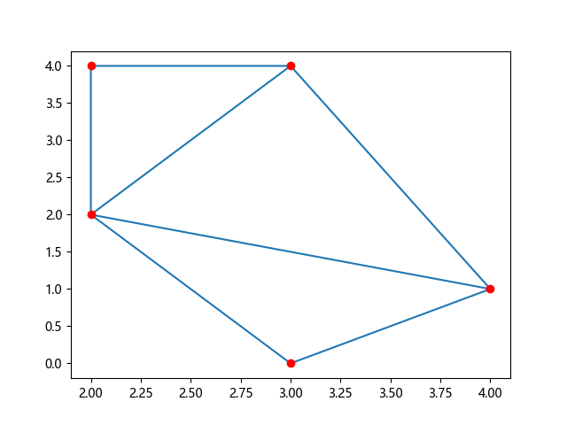
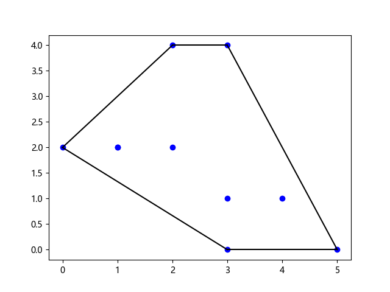

SciPy 空间数据
处理空间数据
空间数据是指在几何空间中表示的数据。
例如。坐标系上的点。
我们在许多任务中处理空间数据问题。
例如。查找一个点是否在边界内。
SciPy 提供了 scipy.spatial 模块，其中包含用于处理空间数据的函数。
三角剖分（Triangulation）
多边形的三角剖分是将多边形划分为多个三角形，通过这些三角形我们可以计算多边形的面积。
点三角剖分意味着创建由表面组成的三角形，其中所有给定点都位于表面中任何三角形的至少一个顶点上。
通过点生成这些三角剖分的一种方法是 Delaunay() 三角剖分。
实例
从以下点创建三角剖分：
import numpy as np from scipy.spatial import Delaunay import matplotlib.pyplot as plt points = np.array([ [2, 4], [3, 4], [3, 0], [2, 2], [4, 1] ]) simplices = Delaunay(points).simplices plt.triplot(points[:, 0], points[:, 1], simplices) plt.scatter(points[:, 0], points[:, 1], color='r') plt.show()
结果：

注意：simplices 属性创建了三角形表示法的泛化。
凸包
凸包是覆盖所有给定点的最小多边形。
使用 ConvexHull() 方法创建凸包。
实例
为以下点创建凸包：
import numpy as np from scipy.spatial import ConvexHull import matplotlib.pyplot as plt points = np.array([ [2, 4], [3, 4], [3, 0], [2, 2], [4, 1], [1, 2], [5, 0], [3, 1], [1, 2], [0, 2] ]) hull = ConvexHull(points) hull_points = hull.simplices plt.scatter(points[:,0], points[:,1]) for simplex in hull_points: plt.plot(points[simplex,0], points[simplex,1], 'k-') plt.show()
结果：

KD 树（KDTree）
KD 树是一种针对最近邻查询优化的数据结构。
例如，在点集中使用 KD 树，我们可以有效地询问哪些点最接近某个给定点。
KDTree() 方法返回 KDTree 对象。
query() 方法返回最近邻居的距离和邻居的位置。
实例
找到点 (1,1) 的最近邻点：
from scipy.spatial import KDTree points = [(1, -1), (2, 3), (-2, 3), (2, -3)] kdtree = KDTree(points) res = kdtree.query((1, 1)) print(res)
结果：
(2.0, 0)
距离矩阵
在数据科学中，有许多距离度量用于查找两点之间的各种类型的距离，如欧几里德距离、余弦距离等。
两个向量之间的距离不仅可以是它们之间直线的长度，还可以是它们与原点之间的角度，或者所需的单位步数等。
许多机器学习算法的性能很大程度上取决于距离度量。例如。 “K 最近邻”或“K 均值”等。
让我们看看一些距离度量：
欧氏距离（Euclidean Distance）
求给定点之间的欧氏距离。
实例
从 scipy.spatial.distance 导入 euclidean from scipy.spatial.distance import euclidean p1 = (1, 0) p2 = (10, 2) res = euclidean(p1, p2) print(res)
结果：
9.21954445729
城市街区距离（曼哈顿距离）
是使用 4 个移动方向计算的距离。
例如，我们只能向上、向下、向右或向左移动，不能对角线移动。
实例
求给定点之间的城市街区距离：
from scipy.spatial.distance import cityblock p1 = (1, 0) p2 = (10, 2) res = cityblock(p1, p2) print(res)
结果：
11
余弦距离
是 A、B 两点之间的余弦角值。
实例
求给定点之间的余弦距离：
from scipy.spatial.distance import cosine p1 = (1, 0) p2 = (10, 2) res = cosine(p1, p2) print(res)
结果：
0.019419324309079777
汉明距离（Hamming Distance）
是两位不同的位数所占的比例。
它是测量二进制序列距离的一种方法。
实例
求给定点之间的汉明距离：
from scipy.spatial.distance import hamming p1 = (True, False, True) p2 = (False, True, True) res = hamming(p1, p2) print(res)
结果：
0.666666666667